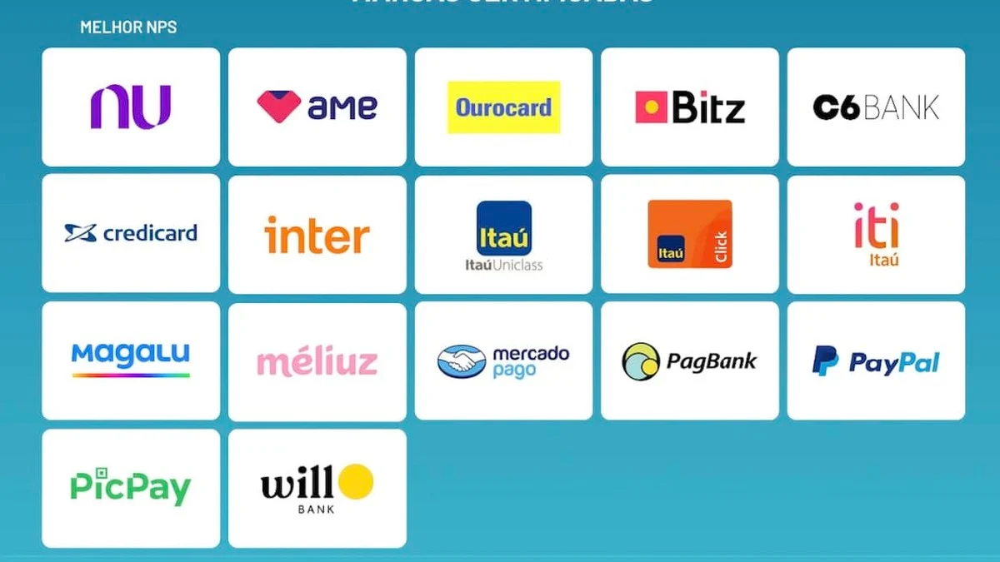
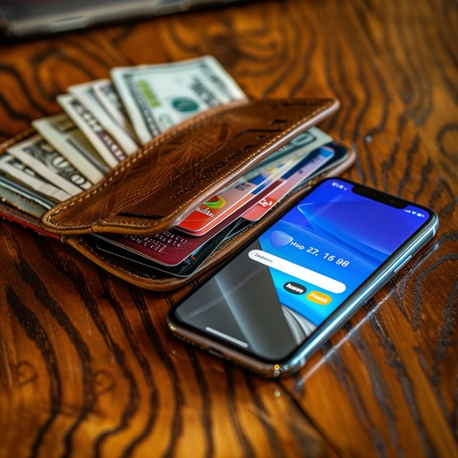

O que são bancos digitais?
-São instituições financeiras que oferecem serviços bancários exclusivamente online, sem agências físicas.
Os bancos digitais oferecem uma ampla gama de serviços financeiros que tradicionalmente seriam associados aos bancos físicos, mas com a conveniência adicional de serem realizados online. Algumas instituições não cobram taxa de manutenção, mas cobram por serviços – como transferências ou saques. Outras cobram mensalidades de acordo com o tipo de plano contratado.
Qual os serviços bancários pode ser feito nos bancos digitais?
- Abertura de conta
- Transferências
- Depósitos e Saques
- Pagamentos de Contas
- Cartões de Débito e Crédito
- Investimentos
- Empréstimos e Financiamentos
- Consulta de Saldo e Extratos
- Recargas de Celular
- Seguros
- Gestão financeira e controle de gastos, entre outros serviços.
As principais instituições financeiras são essas:

Quais as facilidades em usar bancos digitais no meio rural?

Acesso facilitado: Com um banco digital, não é necessário deslocar-se fisicamente até uma agência bancária, o que pode ser difícil em áreas rurais devido à distância e à falta de transporte público adequado.É priciso apenas ter acesso a internet.
Redução de Custos: Bancos digitais geralmente têm estruturas de custos mais baixas do que os bancos tradicionais, o que pode resultar em tarifas mais baixas ou mesmo na ausência delas para serviços básicos.
Facilidade de Abertura de Conta: É possível abrir uma conta em um banco digital com poucos documentos e sem a necessidade de visitar uma agência, o que facilita o acesso aos serviços bancários para pessoas em áreas remotas.
Transferências e Pagamentos: Com os aplicativos de banco digital, é possível realizar transferências de dinheiro para familiares ou para pagar por produtos e serviços, mesmo que não haja agências bancárias próximas.
Acesso a Crédito e Investimentos: Alguns bancos digitais oferecem produtos financeiros como empréstimos e investimentos, possibilitando que empreendedores rurais tenham acesso a capital para expandir seus negócios.
Segurança e Controle Financeiro: Aplicativos de bancos digitais geralmente oferecem recursos robustos de segurança, como autenticação em duas etapas e monitoramento em tempo real das transações, proporcionando maior segurança e controle sobre as finanças.
Educação Financeira: Muitos bancos digitais oferecem ferramentas e recursos educacionais para ajudar os clientes a entenderem melhor seus hábitos de consumo, economizar dinheiro e investir de maneira mais eficaz, o que pode ser particularmente útil em comunidades rurais onde a educação financeira pode ser limitada.
Suporte ao Cliente: A maioria dos bancos digitais oferece suporte ao cliente através de chat online, e-mail ou telefone, o que pode ser crucial para resolver problemas ou responder a dúvidas rapidamente, sem necessidade de visitas presenciais.
Como abrir uma conta digital?
Para abrir uma conta digital, geralmente é preciso fazer um cadastro inicial – pelo site ou pelo aplicativo, dependendo do banco ou instituição. Neste momento, costumam pedir o nome completo, o CPF e o email do titular da conta.Caso você tenha o nome negativado não se preocupe, pois mesmo quem tem o nome sujo pode abrir uma conta digital.
É preciso ir na loja de aplicativo do celular e baixar o aplicativo da instituição na qual escolher, abrir o app e começar o cadastro da documentação e selfie segurando um documento com foto. Após terminar esse cadastro fica-se em analise de documentação por 1 ou 2 dias geralmente, após esse tempo chega uma mensagem informando se os documentos foram aprovados ou não. Se aprovados é liberado dos os recursos da conta para o uso, se não forem aprovados é preciso mandar a documentação novamente.
Vamos ver um video inlustrativo do passo a passo para abrir uma conta no pagbank
Dicas de segurança:
- Nunca compartilhe suas senhas ou PIN com ninguém.
- Use conexões seguras (Wi-Fi protegido por senha ou dados móveis).
- Mantenha seu aplicativo e sistema operacional sempre atualizados.
- Verifique suas transações regularmente para detectar atividades suspeitas.
Referências:
https://blog.nubank.com.br/como-abrir-conta-digital/https://finsidersbrasil.com.br/estudos-e-relatorios/onze-das-17-marcas-de-cartoes-de-credito-preferidas-pelos-clientes-sao-de-fintechs-mostra-pesquisa/